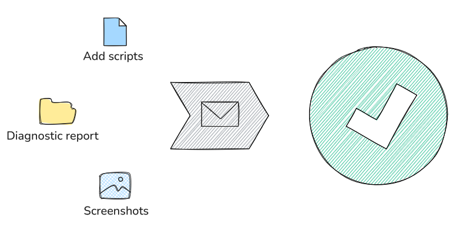

See the Software Center Web site (https://www.fei-software-center.com/tem-apps/autoscript-for-tem/) for information about the latest AutoScript versions and release notes. There you will also find sample scripts and an overview of the product's features.
If you encounter a problem with the AutoScript TEM software, we encourage you to report it so that we can address it in future releases. Please provide as much detail as possible to help us understand and resolve the issue. To ensure efficient resolution, please follow these steps:

If you are using remote scripting configuration, assess if the issue is related to the remote environment (server) or the local setup (client) and create the report there. If not sure, create diagnostic reports for both the server and client.
If you would like to contact the AutoScript TEM software development team directly for technical support, you can use the following email address: autoscripttemsupport@thermofisher.com.